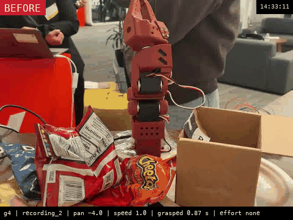
14:33:11 . g4 | recording_2 | pan -4.0 | speed 1.0 | grasped 0.87 s | effort none
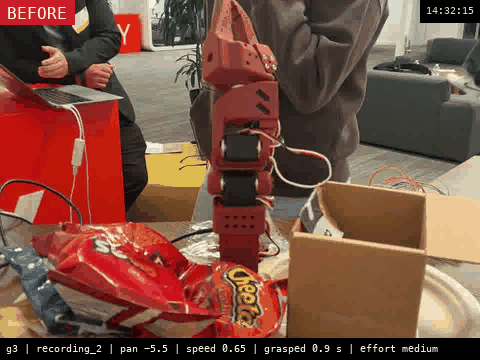
14:32:15 . g3 | recording_2 | pan -5.5 | speed 0.65 | grasped 0.9 s | effort medium
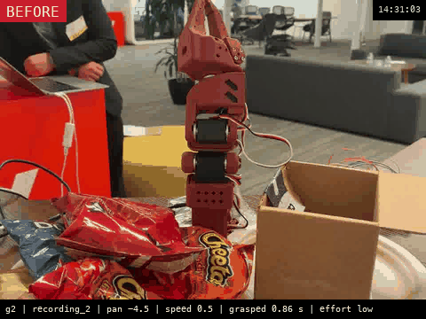
14:31:03 . g2 | recording_2 | pan -4.5 | speed 0.5 | grasped 0.86 s | effort low
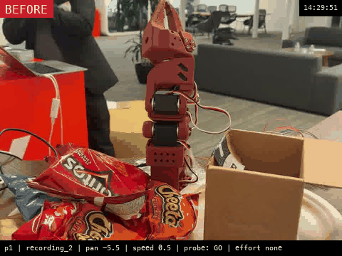
14:29:51 . p1 | recording_2 | pan -5.5 | speed 0.5 | probe: GO | effort none
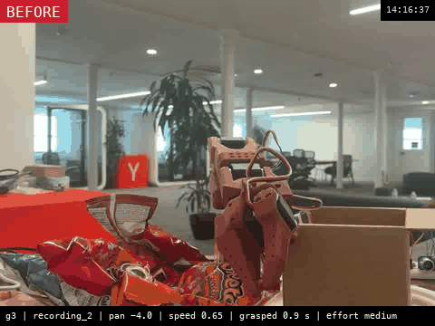
14:16:37 . g3 | recording_2 | pan -4.0 | speed 0.65 | grasped 0.9 s | effort medium
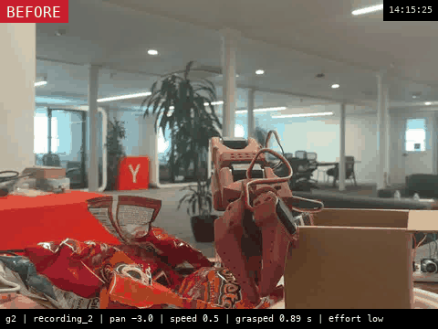
14:15:25 . g2 | recording_2 | pan -3.0 | speed 0.5 | grasped 0.89 s | effort low
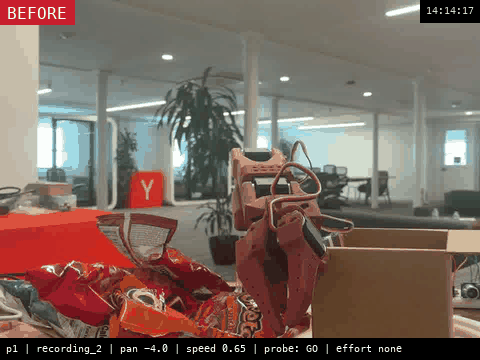
14:14:17 . p1 | recording_2 | pan -4.0 | speed 0.65 | probe: GO | effort none
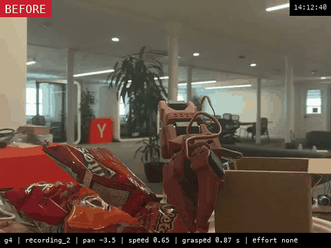
14:12:40 . g4 | recording_2 | pan -3.5 | speed 0.65 | grasped 0.87 s | effort none
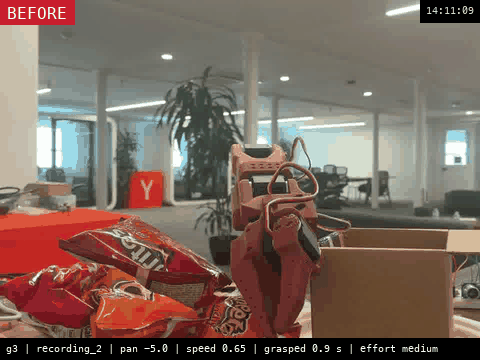
14:11:09 . g3 | recording_2 | pan -5.0 | speed 0.65 | grasped 0.9 s | effort medium
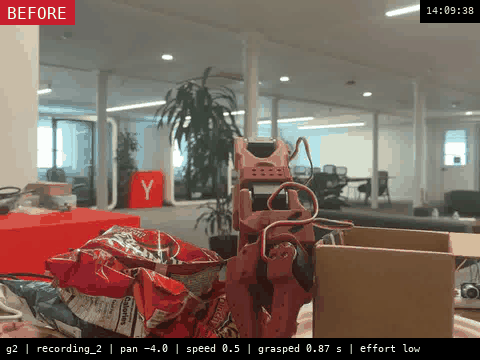
14:09:38 . g2 | recording_2 | pan -4.0 | speed 0.5 | grasped 0.87 s | effort low
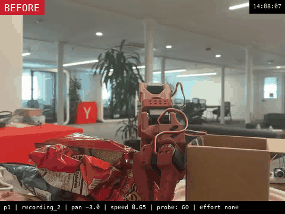
14:08:07 . p1 | recording_2 | pan -3.0 | speed 0.65 | probe: GO | effort none
14:03:36 . g5 | recording_2 | pan -4.0 | speed 0.8 | grasped 0.9 s | effort low
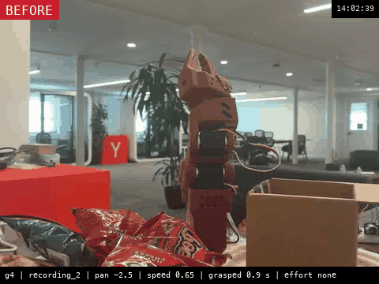
14:02:39 . g4 | recording_2 | pan -2.5 | speed 0.65 | grasped 0.9 s | effort none
14:01:41 . g3 | recording_2 | pan -3.5 | speed 0.5 | grasped 0.91 s | effort medium
14:00:30 . g2 | recording_2 | pan -4.5 | speed 0.65 | grasped 0.9 s | effort low
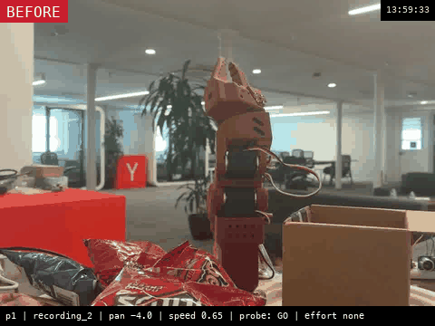
13:59:33 . p1 | recording_2 | pan -4.0 | speed 0.65 | probe: GO | effort none
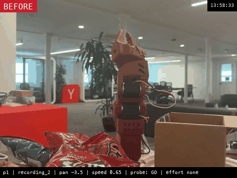
13:58:33 . p1 | recording_2 | pan -3.5 | speed 0.65 | probe: GO | effort none
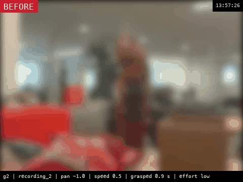
13:57:26 . g2 | recording_2 | pan -1.0 | speed 0.5 | grasped 0.9 s | effort low
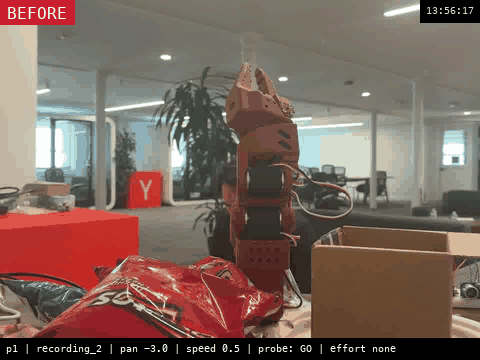
13:56:17 . p1 | recording_2 | pan -3.0 | speed 0.5 | probe: GO | effort none
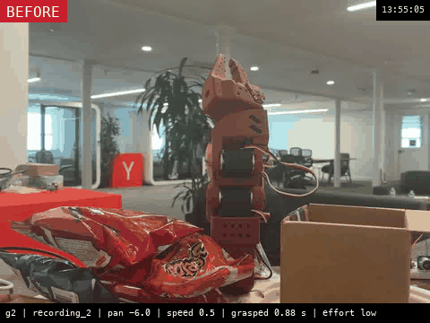
13:55:05 . g2 | recording_2 | pan -6.0 | speed 0.5 | grasped 0.88 s | effort low
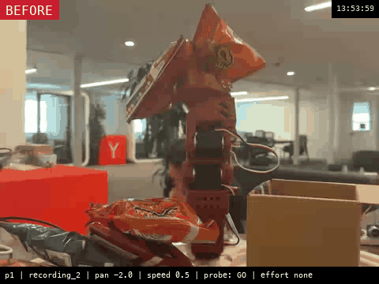
13:53:59 . p1 | recording_2 | pan -2.0 | speed 0.5 | probe: GO | effort none
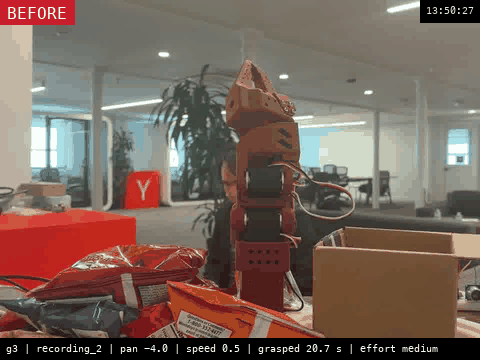
13:50:27 . g3 | recording_2 | pan -4.0 | speed 0.5 | grasped 20.7 s | effort medium
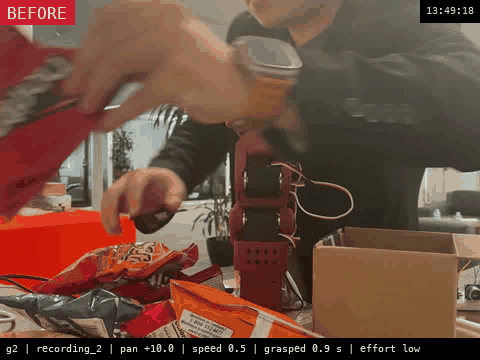
13:49:18 . g2 | recording_2 | pan +10.0 | speed 0.5 | grasped 0.9 s | effort low
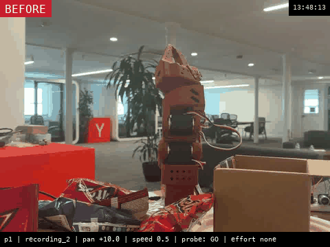
13:48:13 . p1 | recording_2 | pan +10.0 | speed 0.5 | probe: GO | effort none
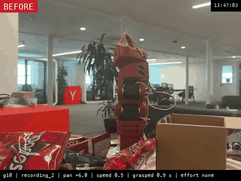
13:47:03 . g10 | recording_2 | pan +6.0 | speed 0.5 | grasped 0.9 s | effort none
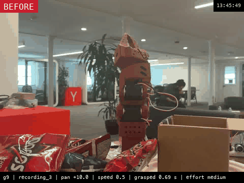
13:45:49 . g9 | recording_3 | pan +10.0 | speed 0.5 | grasped 0.69 s | effort medium
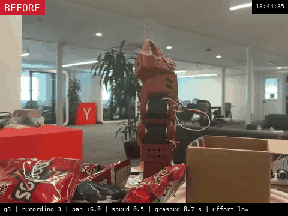
13:44:35 . g8 | recording_3 | pan +6.0 | speed 0.5 | grasped 0.7 s | effort low
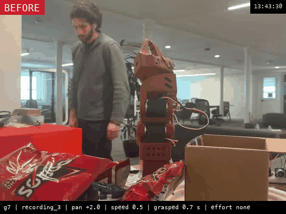
13:43:30 . g7 | recording_3 | pan +2.0 | speed 0.5 | grasped 0.7 s | effort none
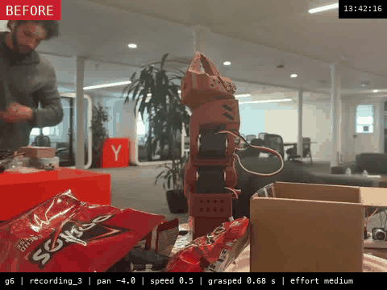
13:42:16 . g6 | recording_3 | pan -4.0 | speed 0.5 | grasped 0.68 s | effort medium
13:40:55 . g5 | wave | pan -9.0 | speed 0.5 | grasped 0.53 s | effort low
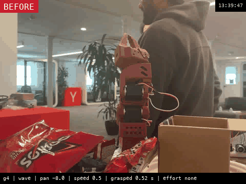
13:39:47 . g4 | wave | pan -8.0 | speed 0.5 | grasped 0.52 s | effort none
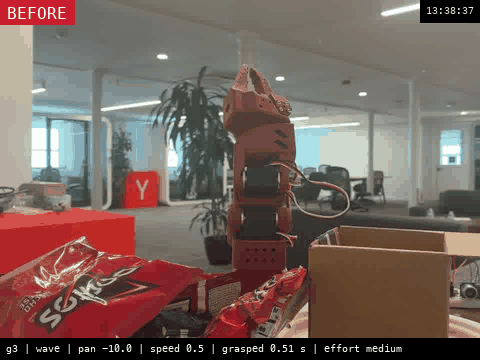
13:38:37 . g3 | wave | pan -10.0 | speed 0.5 | grasped 0.51 s | effort medium
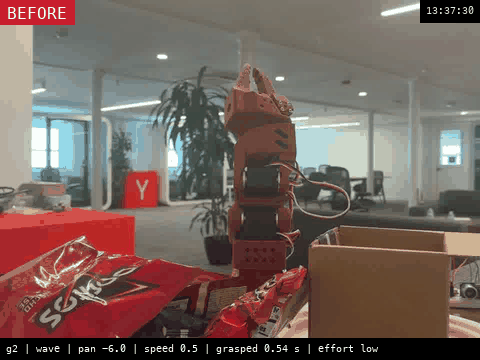
13:37:30 . g2 | wave | pan -6.0 | speed 0.5 | grasped 0.54 s | effort low
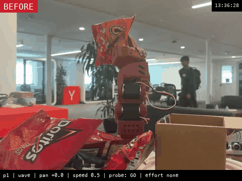
13:36:28 . p1 | wave | pan +0.0 | speed 0.5 | probe: GO | effort none
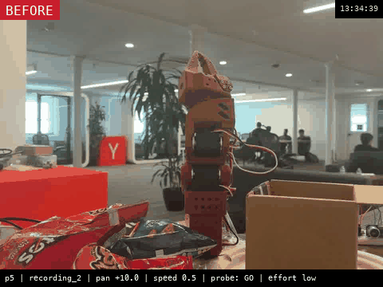
13:34:39 . p5 | recording_2 | pan +10.0 | speed 0.5 | probe: GO | effort low
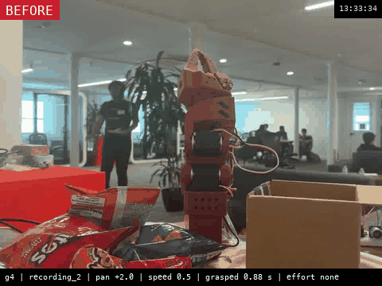
13:33:34 . g4 | recording_2 | pan +2.0 | speed 0.5 | grasped 0.88 s | effort none
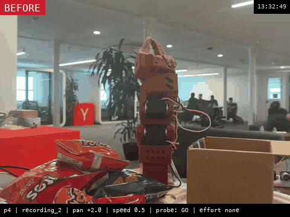
13:32:49 . p4 | recording_2 | pan +2.0 | speed 0.5 | probe: GO | effort none
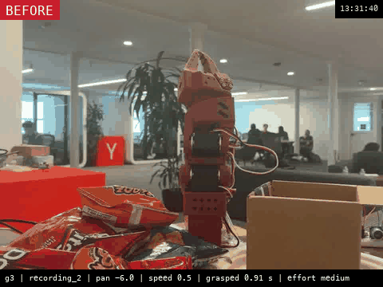
13:31:40 . g3 | recording_2 | pan -6.0 | speed 0.5 | grasped 0.91 s | effort medium
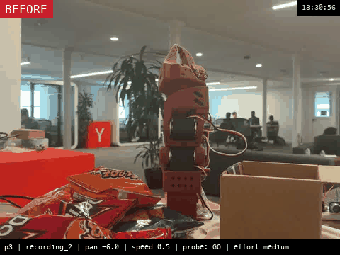
13:30:56 . p3 | recording_2 | pan -6.0 | speed 0.5 | probe: GO | effort medium
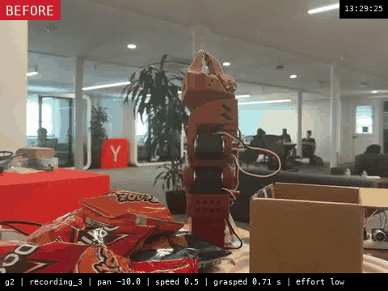
13:29:25 . g2 | recording_3 | pan -10.0 | speed 0.5 | grasped 0.71 s | effort low
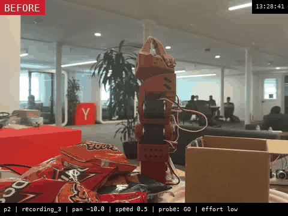
13:28:41 . p2 | recording_3 | pan -10.0 | speed 0.5 | probe: GO | effort low
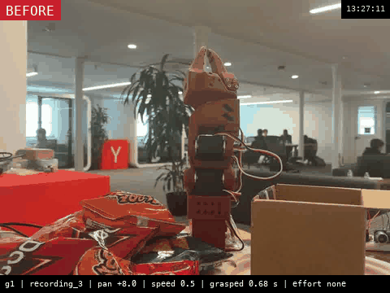
13:27:11 . g1 | recording_3 | pan +8.0 | speed 0.5 | grasped 0.68 s | effort none
13:26:27 . p1 | recording_3 | pan +8.0 | speed 0.5 | probe: GO | effort none
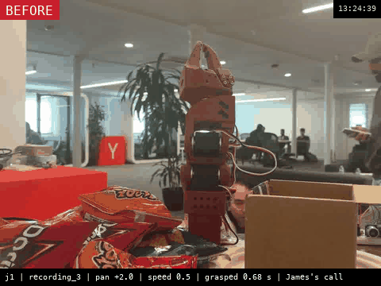
13:24:39 . j1 | recording_3 | pan +2.0 | speed 0.5 | grasped 0.68 s | James's call
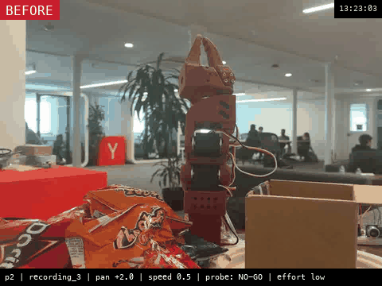
13:23:03 . p2 | recording_3 | pan +2.0 | speed 0.5 | probe: NO-GO | effort low
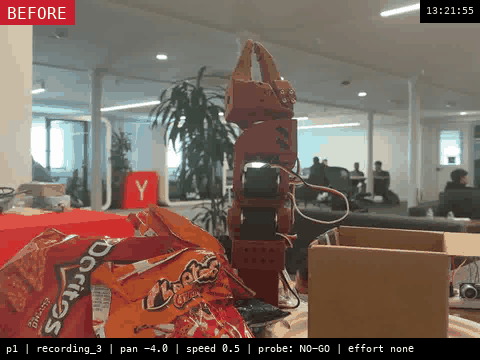
13:21:55 . p1 | recording_3 | pan -4.0 | speed 0.5 | probe: NO-GO | effort none
13:14:56 . p9 | recording_3 | pan -2.0 | speed 0.5 | probe: NO-GO | effort medium
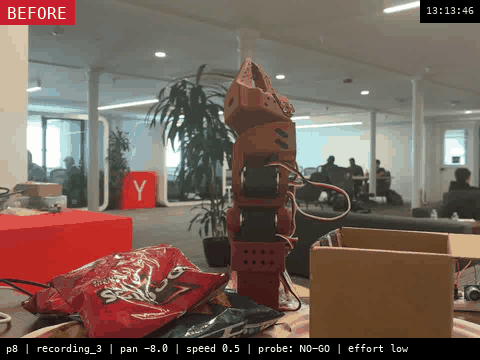
13:13:46 . p8 | recording_3 | pan -8.0 | speed 0.5 | probe: NO-GO | effort low
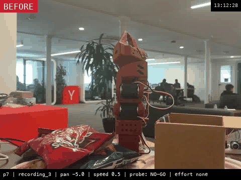
13:12:28 . p7 | recording_3 | pan -5.0 | speed 0.5 | probe: NO-GO | effort none
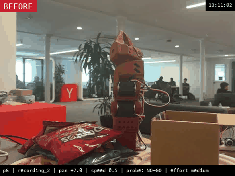
13:11:02 . p6 | recording_2 | pan +7.0 | speed 0.5 | probe: NO-GO | effort medium
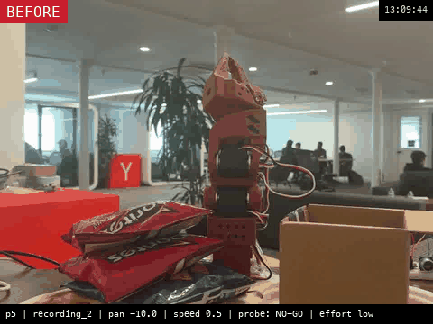
13:09:44 . p5 | recording_2 | pan -10.0 | speed 0.5 | probe: NO-GO | effort low
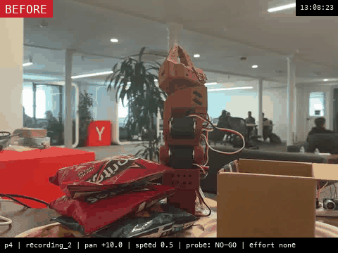
13:08:23 . p4 | recording_2 | pan +10.0 | speed 0.5 | probe: NO-GO | effort none
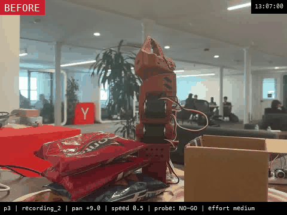
13:07:00 . p3 | recording_2 | pan +9.0 | speed 0.5 | probe: NO-GO | effort medium
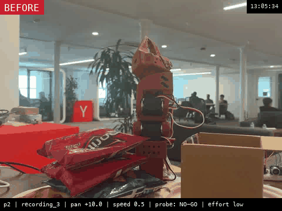
13:05:34 . p2 | recording_3 | pan +10.0 | speed 0.5 | probe: NO-GO | effort low
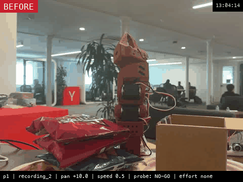
13:04:14 . p1 | recording_2 | pan +10.0 | speed 0.5 | probe: NO-GO | effort none
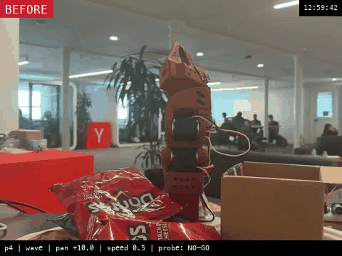
12:59:42 . p4 | wave | pan +10.0 | speed 0.5 | probe: NO-GO
12:58:35 . p3 | wave | pan -2.5 | speed 0.5 | probe: NO-GO
12:57:01 . p2 | wave | pan +5.0 | speed 0.5 | probe: NO-GO
12:55:23 . p1 | recording_2 | pan +0.0 | speed 0.5 | probe: NO-GO
12:50:48 . p3 | recording_3 | pan +2.0 | speed 0.5 | probe: NO-GO
12:49:34 . p2 | wave | pan -8.0 | speed 0.5 | probe: NO-GO
12:48:24 . p1 | recording_3 | pan -9.5 | speed 0.5 | probe: NO-GO
12:47:13 . g3 | recording_3 | pan -9.0 | speed 0.5 | grasped 0.68 s
12:46:07 . g2 | recording_3 | pan -6.5 | speed 0.5 | grasped 0.69 s
12:45:01 . g1 | recording_3 | pan -4.7 | speed 0.5 | grasped 0.7 s
12:43:51 . g3 | recording_3 | pan -3.0 | speed 0.5 | grasped 0.7 s
12:42:42 . g2 | recording_3 | pan +0.0 | speed 0.5 | grasped 0.69 s
12:41:36 . g1 | wave | pan +2.0 | speed 0.5 | grasped 0.54 s
12:33:44 . g8 | wave | pan -1.0 | speed 0.5 | grasped 0.53 s
12:32:41 . g7 | wave | pan -5.0 | speed 0.5 | grasped 0.53 s
12:31:31 . g6 | recording_3 | pan -4.0 | speed 0.5 | grasped 0.69 s
12:30:23 . g5 | wave | pan +8.0 | speed 0.5 | grasped 0.53 s
12:29:19 . g4 | wave | pan +4.0 | speed 0.5 | grasped 0.54 s
12:28:17 . g3 | wave | pan -3.0 | speed 0.5 | grasped 0.52 s
12:27:06 . g2 | recording_3 | pan +7.0 | speed 0.5 | grasped 0.7 s
12:25:58 . g1 | recording_3 | pan +8.5 | speed 0.5 | grasped 0.69 s
12:24:51 . g3 | recording_3 | pan +5.0 | speed 0.5 | grasped 0.69 s
12:23:40 . g2 | wave | pan +10.0 | speed 0.55 | grasped 0.68 s
12:22:26 . g1 | recording_2 | pan +10.0 | speed 0.5 | grasped 1.21 s
12:21:05 . g2 | wave | pan +9.5 | speed 0.5 | grasped 0.75 s
12:19:53 . g1 | wave | pan +6.0 | speed 0.5 | grasped 0.73 s
12:17:38 . g6 | recording_3 | pan +10.0 | speed 0.5 | grasped 0.54 s
12:16:34 . g5 | wave | pan +10.0 | speed 0.5 | grasped 0.7 s
12:15:34 . g4 | recording_3 | pan +8.0 | speed 0.5 | grasped 0.56 s
12:14:28 . g3 | wave | pan +10.0 | speed 0.6 | grasped 0.63 s
12:13:34 . g2 | wave | pan +9.0 | speed 0.75 | grasped 0.56 s
12:12:44 . g1 | wave | pan +8.0 | speed 0.5 | grasped 0.71 s
12:04:10 . g4 | wave | pan -10.0 | speed 0.75 | grasped 0.58 s
12:03:13 . g3 | recording_3 | pan -10.0 | speed 0.5 | grasped 0.55 s
12:02:08 . g2 | recording_2 | pan -10.0 | speed 0.5 | grasped 1.25 s
12:01:05 . g1 | wave | pan -10.0 | speed 0.5 | grasped 0.73 s
11:58:21 . g5 | wave | pan -5.0 | speed 0.5 | grasped 0.78 s
11:57:17 . g4 | wave | pan +9.0 | speed 0.5 | grasped 3.24 s
11:56:12 . g3 | wave | pan +7.0 | speed 0.5 | grasped 0.73 s
11:55:09 . g2 | recording_3 | pan +10.0 | speed 0.5 | grasped 0.55 s
11:54:07 . g1 | wave | pan +10.0 | speed 0.5 | grasped 0.71 s
11:43:52 . 6 | recording_3 | pan +5.0 | no grasp
11:43:20 . 5 | recording_2 | pan +5.0 | no grasp
11:42:47 . 4 | wave | pan +5.0 | no grasp
11:42:16 . 3 | recording_3 | pan +0.0 | no grasp
11:41:43 . 2 | recording_2 | pan +0.0 | no grasp
11:41:05 . 1 | wave | pan +0.0 | no grasp